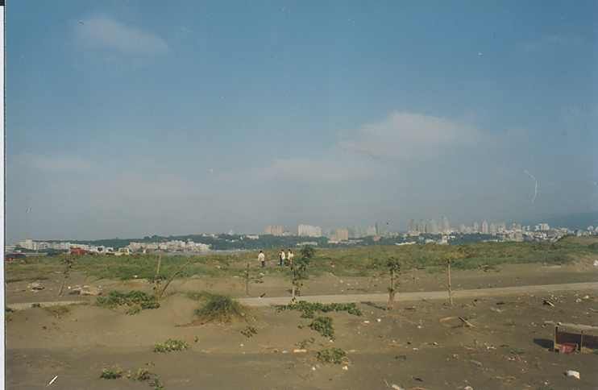
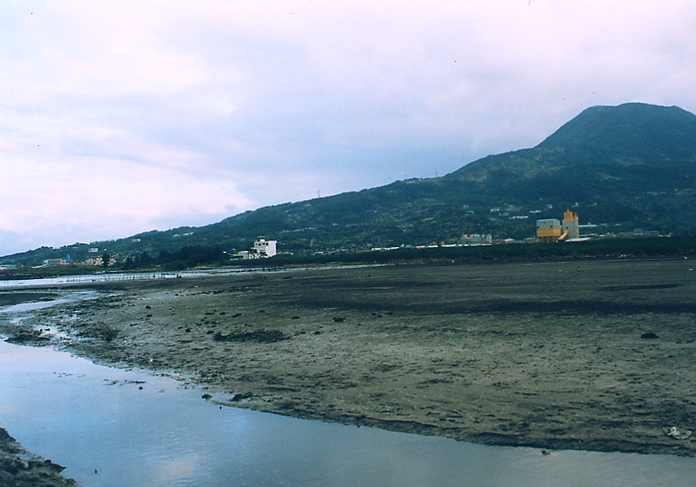

| 二、前言 | |
| (一)、研究動機
挖子尾生態保護區位於八里鄉境內的淡水河口，面積約三十餘公，是淡水河流紅樹林生態保護區最小的一區，但據調查現以發現共有蟹類約二十四種貝類約六種、植物水筆子外，還有約四十種的沙地植物與河口的特有植物，還有鳥類與河口濕地特有的生物，是淡水河口動植物種類最多的地區，我們一般所知的潮間帶植物外，挖子尾還有種類非常多的沙地植物，挖子尾生態保護區是沙地與濕地植物最多的地方，非常值得我們研究與發現自然的奧妙的地方。又由於地勢平坦、濕地廣大是個非常適合學生生態調查的地方。，能把鄉土的生態環境多做研究與瞭解，使我們對挖子尾植物有充份的了解，接近自然、瞭解自然、熱愛自然。 |
|
|  |  |
|
(二)、構成研究的想法 1. 挖子尾生態保護區位於淡水河口，在學區附近的自然生態應充分的利用現有 的自然資源。 2. 讓我們能多瞭解鄉土的特色，更愛鄉里。 3. 由實地的觀察與研究河口的植物生態特性。 4. 觀察紅樹林的生態環境及其他河口植物、沙地植物。 5. 觀察河口濕地植物生態特性。 6. 由觀察和研究中瞭解河口各種植物的生長、繁殖、環境 的特性。 |
|
|
(三)、研究的目標 1. 水筆子的花、種子、葉、根、傳播方式及生長的環境 的 特性。 2.海濱植物的種類、及根、莖、葉、種子繁殖、生長的 特性。 3. 海濱植物的生長特性及分佈。 4.河口動物生長、覓食、繁殖、活動的特性與分佈 的範圍紅樹林的分怖關系。 5.河口濕地的植物與其他生物的關係。 6.紅樹林在河口植物生態的重要性。 7. 河口生態族群與群落的關係 8. 河口生態面臨哪一些生存上的危機。 9. 瞭解河口生態的重要性，更珍惜河口生態保護 區。
|
|